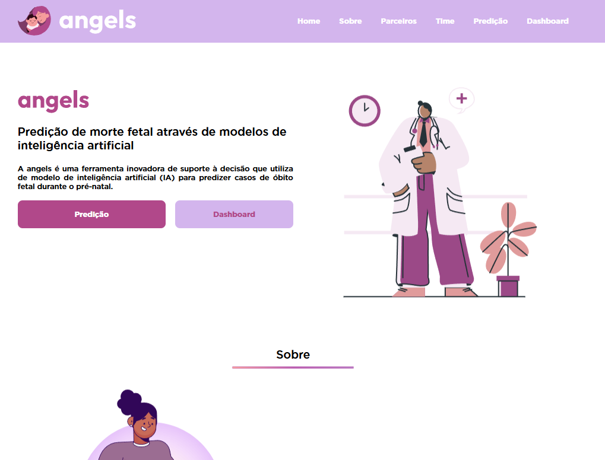
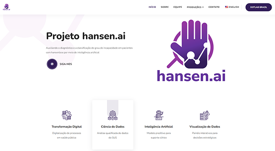

Predição do risco de óbito fetal ao longo do acompanhamento pré-natal contínuo, utilizando dados clínicos e modelos preditivos.

Predição e monitoramento inteligente da resposta ao tratamento da hanseníase, com base em dados clínicos e históricos do paciente.
Identificação precoce e automatizada de arboviroses por meio de técnicas de inteligência artificial aplicadas a dados clínicos e epidemiológicos.
Aplicação de técnicas de machine learning para vigilância ativa e preditiva da malária, com base em dados epidemiológicos e ambientais.
Painel interativo - Dashboards
Visualize os dados que impulsionam decisões estratégicas em saúde, com painéis interativos alimentados por Inteligência Artificial.